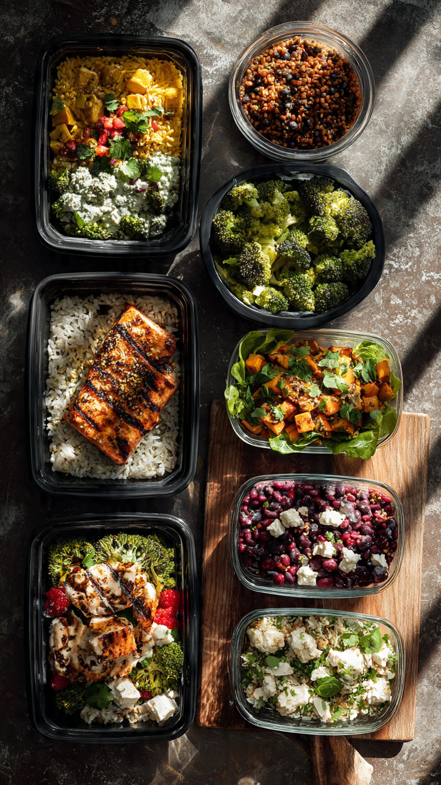

20 High Protein Meal Prep Recipes for the Week Under 400 Calories

Meal prep doesn't have to be boring chicken and rice. As someone who meal preps every Sunday in Port Harcourt, I know you need recipes that are fast, filling, and actually taste good by Friday.
The secret: 30g+ of protein keeps you full, and staying under 400 calories keeps you on track for fat loss or lean muscle. All recipes use 5-7 ingredients and store perfectly in the fridge or freezer.
Why High Protein + Under 400 Calories Works
Protein is the most filling macro. Aim for 30g per meal and you’ll snack less. Under 400 calories gives you room for 3 meals + 1 snack and still hit a 1200-1500 calorie day. Every recipe below is tested for meal prep: no soggy veggies, no dry chicken.
20 High Protein Meal Prep Recipes Under 400 Calories
1. Lemon Garlic Chicken Bowls
Grilled chicken breast, roasted broccoli, and cauliflower rice with lemon garlic sauce.
Calories: 380 | Protein: 35g
2. Turkey Taco Meal Prep
Lean ground turkey, black beans, corn, salsa, and lettuce in meal prep containers.
Calories: 395 | Protein: 32g
3. Buffalo Chicken Lettuce Wraps
Shredded chicken tossed in buffalo sauce with celery, carrots, and blue cheese yogurt dip.
Calories: 350 | Protein: 31g
4. Teriyaki Salmon & Broccoli
Baked salmon with sugar-free teriyaki, steamed broccoli, and 1/2 cup brown rice.
Calories: 390 | Protein: 34g
5. Tuna Protein Salad Jars
Canned tuna, chickpeas, cucumber, cherry tomatoes, and feta with lemon vinaigrette.
Calories: 360 | Protein: 28g
6. Tofu & Edamame Power Bowl
Crispy tofu, edamame, quinoa, and sesame ginger dressing.
Calories: 385 | Protein: 26g
7. Cottage Cheese Egg Bake Cups
Egg whites, cottage cheese, spinach, and turkey bacon baked in muffin tins.
Calories: 280 | Protein: 24g
8. Lentil & Greek Yogurt Bowl
Brown lentils, Greek yogurt tzatziki, cucumbers, and cherry tomatoes.
Calories: 370 | Protein: 22g
9. Lean Beef & Zucchini Skillet
93% lean ground beef, zucchini noodles, marinara, and parmesan.
Calories: 380 | Protein: 33g
10. Shrimp & Cauliflower Fried "Rice"
Shrimp, cauliflower rice, peas, carrots, and eggs stir-fried with soy sauce.
Calories: 340 | Protein: 29g
Recipes 11-20: Greek Chicken Meal Prep, Protein Pancake Meal Prep, Turkey Meatballs + Spaghetti Squash, BBQ Chicken Sweet Potato, Thai Peanut Chicken Bowl, Steak Fajita Bowls, Egg Roll in a Bowl, Protein Pasta Salad, Breakfast Burrito Bowls, and Asian Ground Turkey Lettuce Cups. All follow the same under-400-calorie rule.
Download My Free High Protein Meal Prep Grocery List 🛒
Get the printable PDF with all 20 recipes + exact quantities + shopping list
Download Free Now